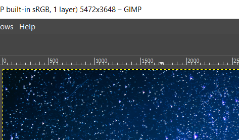
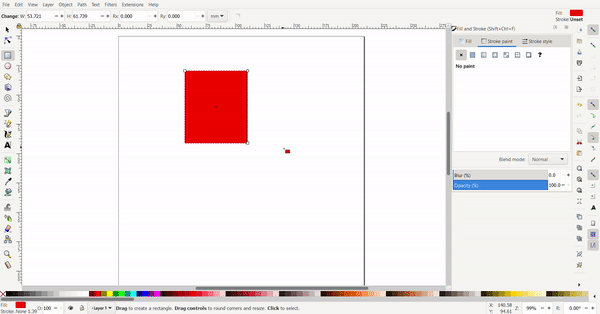
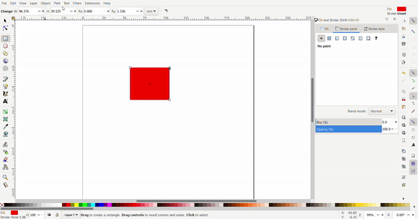

Computer aided design (CAD)
Computer aided design software such as GIMP, Inkscape and Onshape helps us to visualize our design on the computer. These designs can be sent to computer numerical controlled machines such as the laser cutter and 3d printer to create our designed models.
Click on a link below to jump to a section:
2D design
2D designs are used for laser cutting. Rasters are defined using pixels and are used for engraving and are good for making images. Vectors are mathematically defined and are used for the outlines. Vectors can be scaled infinitely while rasters would appear pixilated.
Raster Image:
Vector image:
Raster manipulation in GIMP
GIMP, or GNU Image Manipulation Program is a very powerful and free piece of software for image editing.
Opening a file in GIMP
To open a file, click file, the open. Alternatively, press "ctrl" and "o".
Image scaling
The top of thw GIMP window will show the image size, in this case it is 5472 by 3648 pixels.
To resize the image, we need to click in image, then scale image. A scale Image window will appear.
Here, we can enter the new values directly in the width and height box. there is also a chain to scale the image uniformly.
Cropping an image
To crop an image, the crop tool can be used. press enter when done and esc to cancel.
Before cropping:
After cropping:
Image rotating
The rotate tools can be found under image then transform. Here we have the option to flip the image horizontally and vertically as well as rotate the image 90 degrees or 180 degrees. There is also arbitrary rotation which we can use to straighten an image.

Before:
Image flipping
Image rotation
Arbitrary rotation
The scroll wheel can also be used on the angle for fine adjustment.
The images colours such ad the colour balance, hue, saturation and exposure can be adjusted in the colours menu.
The image can be turned greyscale by reducing its saturation
The colours and feel of the image can be changed by changing the colour balance
The brightness can be changed by changing the exposure
The colours can be significantly changed by changing the hue
The brightness can also be changes from the brightness and contrast menu
Vectors in Inkscape
Inkscape is a vector graphics software that allows us to draw designs to be laser cut.
Inkscape controls
To pan, click and hold the mouse wheel then drag the mouse to pan.
To zoom press "ctrl" then scroll the mouse wheel.
Primitive shapes
Rectangles, circles and polygons can be found at the left bar.
Rectangles
To draw a square, select the rectangle tool. Then, click on the sheet for the first conner, and drag, then release for the second conner.
To resize the rectangle, the cursor is selected, and black arrows will appear around the rectangle the arrows can be clicked and dragged. The conner arrows resize the adjacent two sides at once while the side arrows only resize the side.
By clicking the rectangle again, the arrows change direction. Now the arrows at the conners are used for rotating and the arrows at the sides is used to add skew to turn the rectangle into a rhombus of a parallelogram.
The conners of the rectangle can be rounded by selecting the rectangle tool, then the rectangle. A white dot will appear and when dragged, the conners are rounded.
Exact dimensions can be defined for the rectangle to turn it into a square. The dimensions are defined at the top.
To draw a circle, select the circle tool. Then, click on the sheet for the first conner, and drag, then release for the second conner.
To resize the circle, the cursor is selected, and black arrows will appear around the circle the arrows can be clicked and dragged. The conner arrows resize the adjacent two sides at once while the side arrows only resize the side.

By clicking the circle again, the arrows change direction. Now the arrows at the conners are used for rotating and the arrows at the sides is used to add skew to turn the circle into an ellipse.
The circle can be turned into a segment by selecting the circle tool then the circle. By dragging the dot outside the circle, a pacman circle segment is created. By dragging the dot inside the circle, the circle will be cut off by a line.
Exact dimensions can be defined for the circle. The radius can be defined to make a perfect circle or an ellipse.
Polygons and stars
To draw a polygon or star, select the polygon tool. Then, click on the sheet for the first conner, and drag, then release for the second conner.
The star can be changed into a hexagon by changing the number of conners and selecting the polygon button.
To resize the polygon, the cursor is selected, and black arrows will appear around the polygon the arrows can be clicked and dragged. The conner arrows resize the adjacent two sides at once while the side arrows only resize the side.
By clicking the polygon again, the arrows change direction. Now the arrows at the conners are used for rotating and the arrows at the sides is used to skew the hexagon.
Stroke and fill
Fill colour can be selected by clicking the colours below. Stroke colours are selected by first clicking "shift" then the colour that you want.
Text
Text can be added with the text tool. Select the text tool click and drag to create a text box, then, type your text. To select font size and font, press "ctrl", "shift" and "t". Select your font and font size and click apply.
Image to svg
First, open your image in inkscape using "ctrl" and "o".
Then go to "path" and "trace bitmap".
A menu will appear on the right. Click update.
A traced image vector will be created on top of the current image. The image can be created, leaving the vector. The fill and stroke can also be changed.
Font Awesome Free 5.2.0 by @fontawesome - https://fontawesome.com, CC BY 4.0 <https://creativecommons.org/licenses/by/4.0>, via Wikimedia Commons
3D CAD
3D CAD is used to create designs for 3d printing. The used of Onshape for 3D CAD will be documented here.
2D Sketch
To create a 3D model, a 2D sketch must first be created. To create a sketch, Select sketch and select a plane to sketch on.
A line can be created by clicking the line tool or pressing "L". Click where you want the line to start and then click the points of the line. To end a line, double click. A construction line can be created by selecting the construction line button of pressing "Q"
A rectangle can be created by using the rectangle tool.
The corner rectangle draws a rectangle using two diagonal conners, to select the corner rectangle tool, press "G" or select "rectangle", then, "conner rectangle".
A centre rectangle can be created by selecting the centre point then one of the conners. To create a centre rectangle press "R" or select "rectangle", then, "centre rectangle".
The dimensions can be selected by typing a number then pressing "Enter".
To create a circle, select "circle" or press "C". Select the centre point then the radius of the circle.
The dimensions can be selected by typing a number then pressing "Enter".
To create a 3-point arc, select "arc" or press "A". Select the first two points then the radius of the arc.
To create a centre point arc, select the centre first then the two points of the arc.
To add images, select the plus icon, then import. Select your file to import.
To add an image, create a new sketch, then click "import dxf", then, "insert image". Draw the image rectangle to add the image.
Tracing an image can be done with a spline. Click spline, click on the sketch to create spline points. Additional spline points can be created. By selecting the spline point tool then clicking on the spline. The points can also be moved.
Points are useful for creating holes in objects.
Text can be created by using the text tool. Select the text tool, then draw a rectangle. Type your text and confirm. The text can be dimensioned.
The use tool can be used to trace an outline of a part to be used in a sketch.
A sketch fillet can be used to create fillets in a 2D sketch. Select the sketch fillet tool, then click the two lines to fillet and select the fillet radius.
The trim tool can be used to remove unwanted lines in a sketch. To use, select the lines you want to remove.
Offset can be used to offset lines. Dimensions can be defined.
Slots can be created by using the slot tool. Select the line to slot and define the diameter of the slot.
Lines can be mirrored with the mirror tool. To use, Select the mirror line, and select the lines you want to mirror. To finish, press "Esc".
Pattern can be used to create repeating lines.
Linear pattern can create additional lines in the X and Y direction. The distance between patterns and number of patterns can be selected.
Circular pattern creates a circular pattern around a point, the number of patterns and the angle can be defined.
A dimension can be added to constraint a line.
Coincident constraints two points to the same location.
Concentric constraints circles to the same centre points.
Parallel makes two lines parallel.
Tangent constraints a line to be tangent with a circle.
horizontal and vertical constraints a line to be horizontal or vertical.
Perpendicular makes two lines perpendicular to each other.
Equal makes two lines the same length.
2D to 3D
Extrude is used to create solids from sketches. To extrude a 2D sketch, click "Extrude" or press "E". Select the region that you want to extrude and select the height. Extrude can be used to create or add new geometry and remove geometry. The extrude can be changed from blind to symmetric to extrude evenly on both sides.
Revolve is used to create solids from sketches. To revolve a 2D sketch, click "Revolve". Select the region that you want to revolve and select the height. Revolve can also be used to create or add new geometry and remove geometry.
Sweep is used to create a profile along a path. Select the profile to sweep, then select the path.
Loft creates geometry between two sketches by connecting the sketch's vertices. To use, select the two sketches to loft.
The fillet tool rounds over edges. A radius can be defined. Select the edges to fillet.
Chamfer created a flat edge at conners of an object. To chamfer an edge, select the chamfer tool, then select the edges to chamfer and the chamfer distance and/or angle.
Draft is useful for applying a taper to one or more faces. First, select a neutral plane, the face that doesn’t change, then select the faces to taper.
Ribs help to add strength to a part. Select the rib sketch to define the rib profile and location. Then select the part to add a rib to. Define the sketch relation to the part, in the below example, the sketch is perpendicular, normal to the rib.
Shell can be used to hollow a part and remove a face. To hollow a part "hollow" needs to be checked. To hollow a part and remove faces select the faces you want to remove. The shell thickness can be set.
The hole tool can be used to create simple through holes, blind holes, threaded holes, counterbore holes and countersink holes for a variety of screws.
The pattern tool can be used to create multiples of an object.
To create a linear pattern select the part to pattern, the direction to pattern and define the distance.
To create a circular pattern, select the part to pattern, then, select the axis of rotation.
To mirror a part select the part to mirror and the mirror plane.
Boolean can be used to join parts together, subtract a part from another, Or find the intersecting geometry between two or more parts.
The split tool uses a plane or surface to split parts.
Transform can be used to move a part, rotate a part, and copy a part. To move a part, there is the translate by line, the part moves the length of the line and in the direction of the line. Translate by distance, where the part moves in the direction of the line, but the distance can be defined. Translate by xyz, the incremental position can be defined with incremental x, y and z coordinate values.
The part can be rotated by selecting rotate, then, the part to rotate and the axis of rotation. The angle of rotation and direction can be defined.
The part can be copied by selecting copy in place.
A plane can be created to create sketches or as a tool to split parts.
An offset plane can be created be selecting a face to offset from and the offset distance.
Plane point creates a plane incident to a point and planar to a face.
Line angle creates a plane with the revolve axis at the line at an angle to a face.
Point normal creates a plane normal to a line and incident to a point
Three point creates a plane incident to three points.
Midplane creates a plane at the centre of two faces.
Curve point creates a plane incident to a point and normal to the tangent of a curve.
A helix can be created using a curved surface. The number of turns and the starting angle can be defined.
Geometry from other part studios can be imported to be used as reference geometry.
Variables can be used to make changes to the part easier.